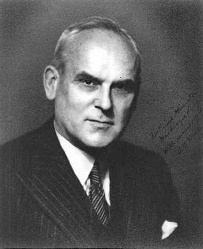
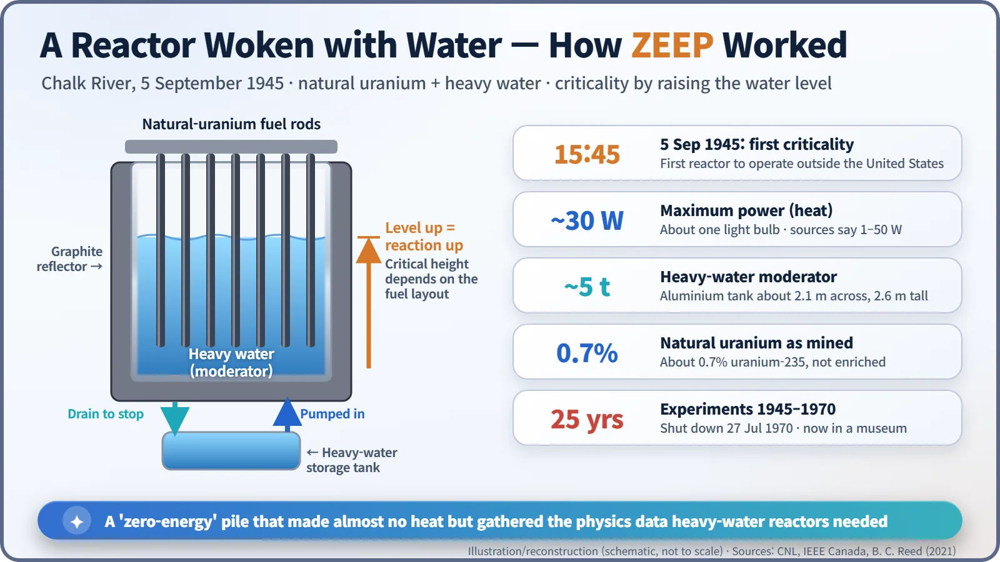
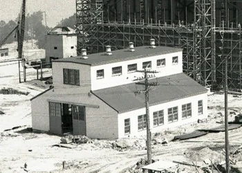
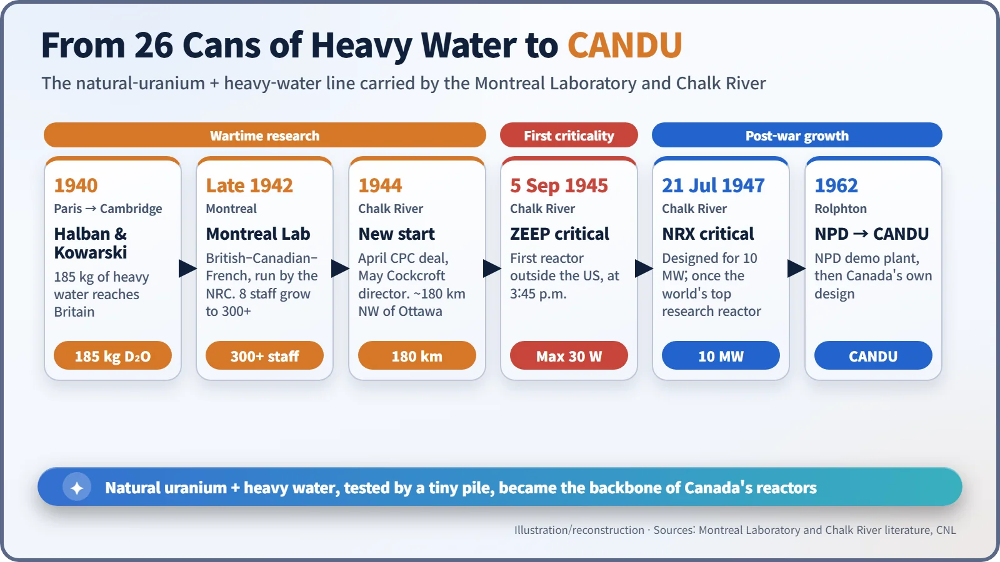

Nuclear History · 096
A Spark the Size of a Light Bulb: The First Reactor Outside the United States — The Montreal Laboratory and ZEEP (1942–1945)
A team that began in a rented Montreal house in 1942 woke a tiny heavy-water reactor in the Ontario woods in 1945, planting the roots of Canada's CANDU.
At 3:45 p.m. on 5 September 1945, at Chalk River in Ontario, a small tank of heavy water called ZEEP became the first nuclear reactor to operate outside the United States. It was the product of the Montreal Laboratory, a wartime British–Canadian–French team that began in a rented house in 1942. Its pairing of natural uranium and heavy water later grew into Canada's CANDU reactors.
Two atomic events on one day
On 5 September 1945, Canada had two "atomic events" on the same day. In Ottawa, the capital, Igor Gouzenko, a cipher clerk at the Soviet embassy, defected, carrying documents that would expose a Soviet atomic spy network. [1] And about 180 km north-west of Ottawa, in the forest settlement of Chalk River, something quieter happened at 3:45 in the afternoon. "Heavy water" had been rising inside a small aluminium tank, and the fission chain reaction began to keep itself going. It was the first time a nuclear reactor had come to life outside the United States: the first criticality of ZEEP. [3] The spy story belongs elsewhere. This is the story of how that small tank got to the woods.
Somewhere the bombs did not fall
When France collapsed in 1940, Hans von Halban (1908–1964) and Lew Kowarski (1907–1979) escaped to Britain with about 185 kg of Norwegian heavy water, packed in 26 cans. At the Cavendish Laboratory in Cambridge they showed that heavy water and uranium should be able to sustain a chain reaction. But Britain, under air attack, was no place to build a reactor. The obvious host, the United States, was wary of taking the team on for security reasons and because of French patent claims. That left Canada. [1]
Canada was not starting from nothing. At the National Research Council (NRC) in Ottawa, George C. Laurence (1905–1987) had been experimenting since 1940 with uranium oxide packed into paper bags and buried in a pile of carbon. Impurities soaked up too many neutrons and the experiment failed, but it got as far as a multiplication factor of about 0.9: every 100 neutrons led to roughly 90 in the next generation. [4]
In 1942 Canada accepted the British proposal for a joint laboratory. According to a story often told, C. D. Howe (1886–1960), the Minister of Munitions and Supply, approved the programme with the words "Okay, let's go!" [5] The site was Montreal, for a refreshingly practical reason: in wartime Ottawa, housing was even harder to find. [1]

A lab that began in a rented house
The first eight staff arrived at the end of 1942 and set up in a house owned by McGill University. In March 1943 the laboratory moved into unused space in a Université de Montréal building, and it eventually grew to more than 300 people. About half were Canadians recruited by Laurence; the rest came from Britain, France, Czechoslovakia, Austria and Italy. It was a British–Canadian–French laboratory run by the NRC. [1]
Then, in 1943, the flow of information from the United States stopped. Even heavy water made at Trail, in British Columbia, could not be delivered because it was under American contract. By June 1943 work had all but halted, and the Canadian government was talking about cancelling the project. [1]
The lifeline was the Quebec Agreement of August 1943, which restored Anglo-American cooperation. In April 1944 its Combined Policy Committee agreed that a heavy-water reactor would be built in Canada. The Americans would lend heavy water and uranium, but would not share details of how plutonium is separated. In May 1944 the British physicist John Cockcroft (1897–1967) replaced Halban as director. Kowarski, who had refused to work under Halban and stayed in Britain, now crossed the Atlantic too. [1]
A small tank in the woods, woken with water
The new site was Chalk River, on the Ottawa River. The laboratory there opened in 1944, and on 24 August that year it was decided to build a small test reactor before the big NRX reactor. Kowarski was put in charge. The small machine was called ZEEP, for Zero Energy Experimental Pile. "Zero energy" meant it produced almost no heat; "pile" was the period word for a reactor. [1] [3]
The design was simple. Natural-uranium fuel rods hung inside an aluminium tank about 2.1 m across and 2.6 m tall, surrounded by a graphite reflector. [2] [4] Natural uranium contains only about 0.7% of the easily split uranium-235. In ordinary water, the hydrogen swallows too many neutrons for a natural-uranium chain reaction to keep going. Heavy water, which absorbs hardly any neutrons, was the answer.
ZEEP's "on switch" was the water level. As about five tonnes of heavy water were pumped into the tank, more of each fuel rod was submerged and the reaction grew stronger. Like filling a bath and turning off the tap just before it overflows, the operators stopped at the critical height, the level at which the neutron population sustains itself. Drain the heavy water and the reaction stops. That is how, at 3:45 p.m. on 5 September 1945, ZEEP went critical. [3]

A physics instrument, not a power plant
Its maximum power was about 30 watts, roughly one light bulb. Sources quote anything from 1 to 50 watts, which shows how small the number is. [2] [3] ZEEP was never meant to make electricity or plutonium. It was a physics instrument: by rearranging the fuel rods and measuring when the pile became critical, the team gathered the data used to fine-tune the NRX design.

What "first outside the United States" really means
It is wrong to call ZEEP "the world's second reactor". Several reactors were already running in the United States, and even among heavy-water reactors the US CP-3 at Argonne came first, in May 1944. The accurate claim is that ZEEP was the first reactor to operate outside the United States. The Soviet Union's first reactor did not go critical until 25 December 1946. [3] [4]
What the light-bulb spark left behind
The Montreal Laboratory closed in July 1946, and NRX went critical on 21 July 1947. Designed for 10 megawatts, it was for a time the most powerful research reactor in the world. [1]
ZEEP itself was used for experiments until 27 July 1970, and it is now displayed at the Canada Science and Technology Museum in Ottawa. [2] Above all, its combination of natural uranium and heavy water carried on through NRX and NRU to the NPD demonstration power plant in 1962, and on to Canada's own heavy-water power reactor, CANDU. A spark the size of a light bulb, born of wartime international cooperation, became the root of a nation's nuclear technology.
